/ TEACHING — 3D MAX MODULE
Architecture Computer Graphics,
modelled, lit & rendered.
A 3D Max module teaching students to build architectural 3D environments — modelling with tools and modifiers, assigning materials, setting natural and artificial light, and exporting raster visualizations. The module also introduces 3D printing, preparing finished models for the printer.
/ COURSE DESCRIPTION
From model to material to render.
The module teaches students how to use 3D modelling tools and modifiers to build architectural 3D environments, assign materials, and create natural and artificial lights, before exporting raster visualizations of their work.
Rendering is carried out in V-Ray and, in earlier terms, Arnold. Beyond the image, the module introduces students to 3D printing — teaching them how to prepare their models in Cura so they can be printed as physical objects.
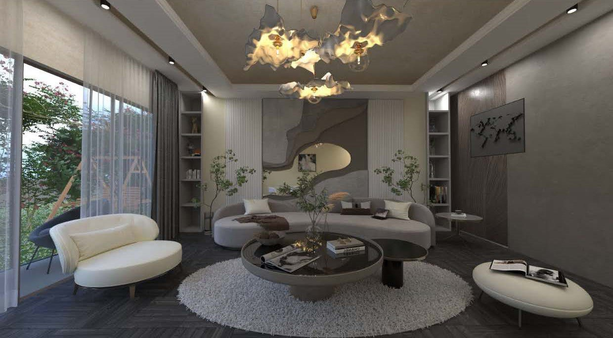
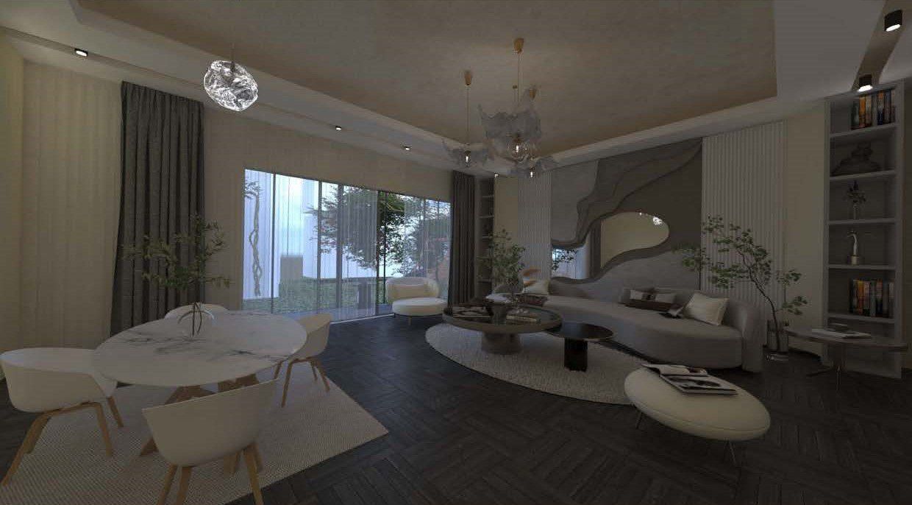
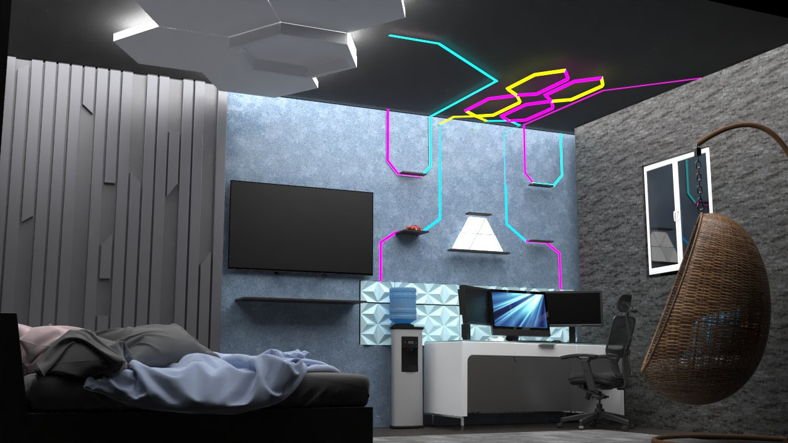
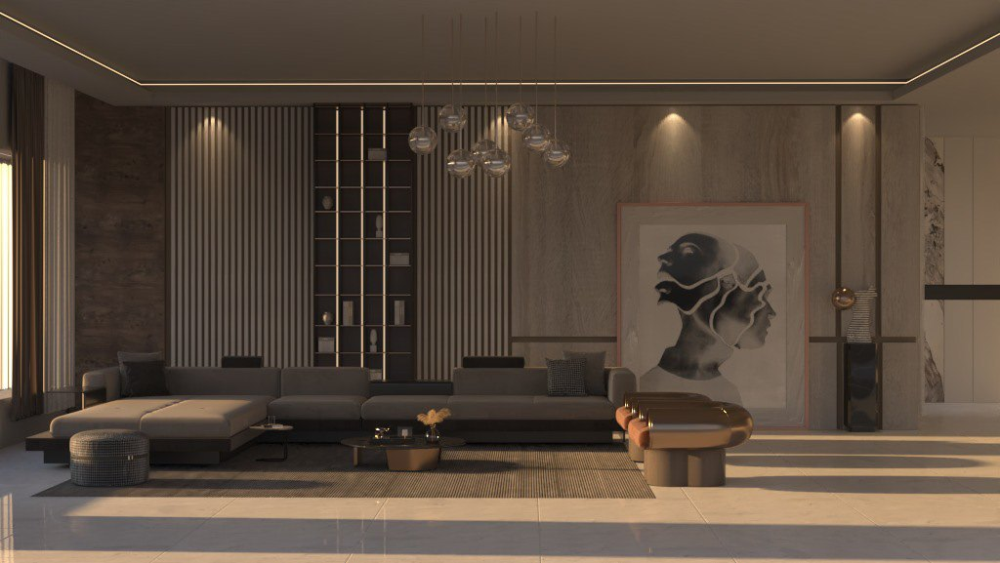
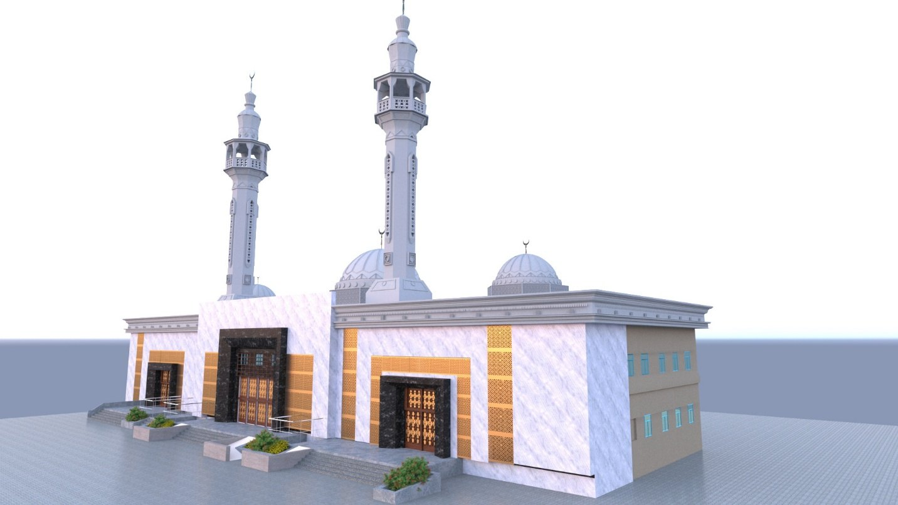
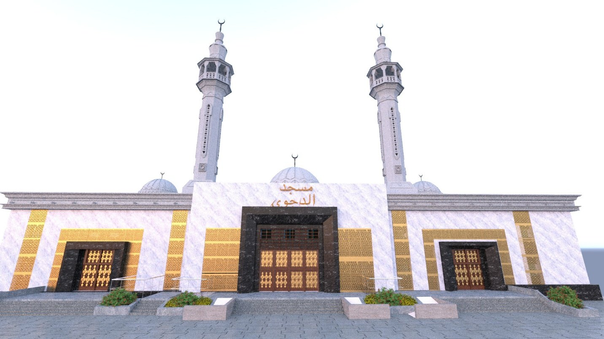
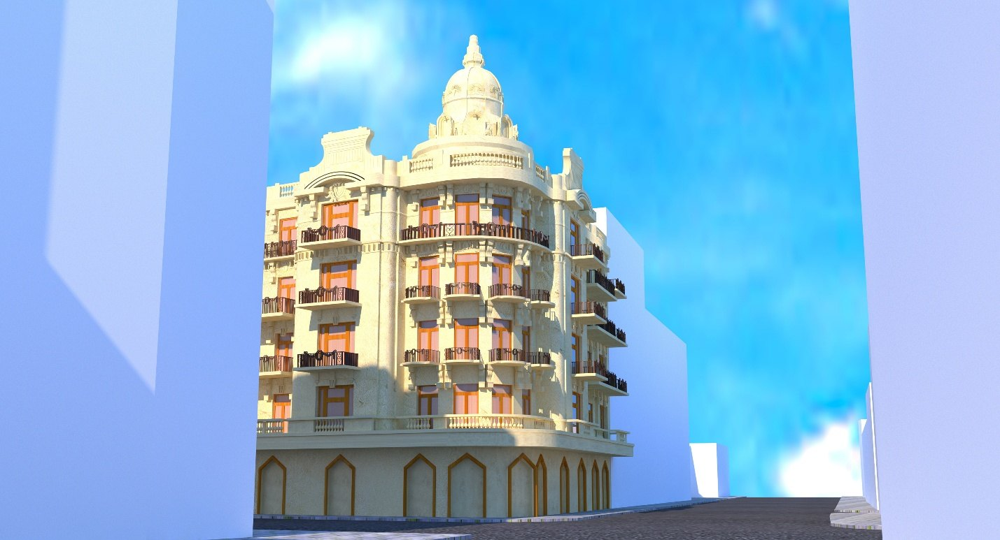
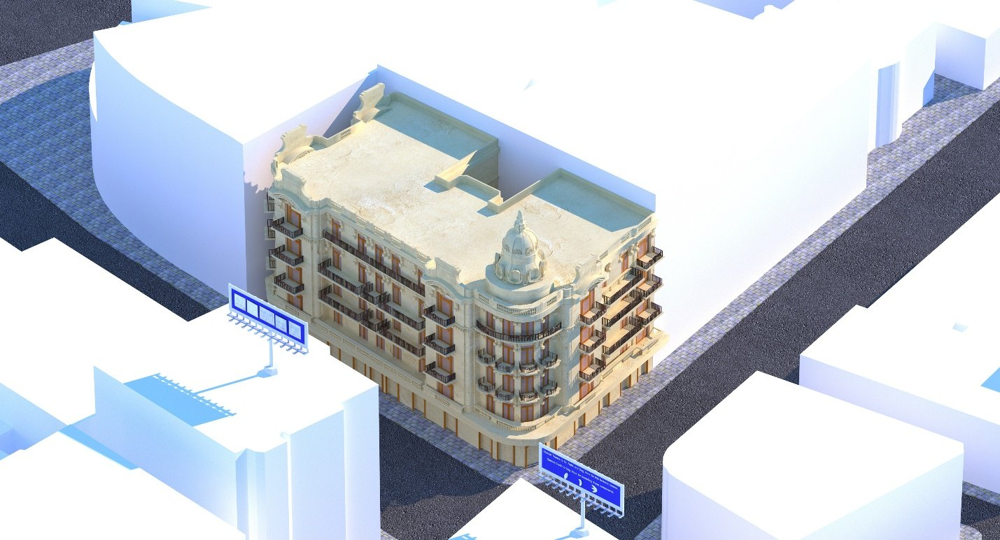
Nourhan Mohamed carried a single project across the full module — from rendered environments in 3D Max and Arnold through to a model prepared and 3D-printed in Cura.
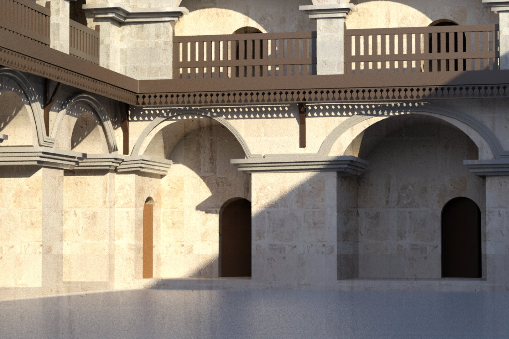
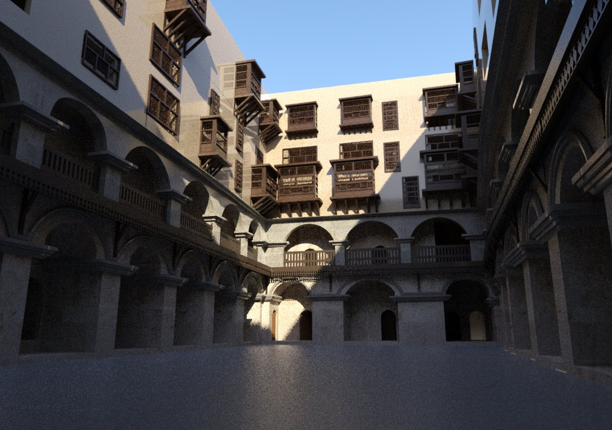
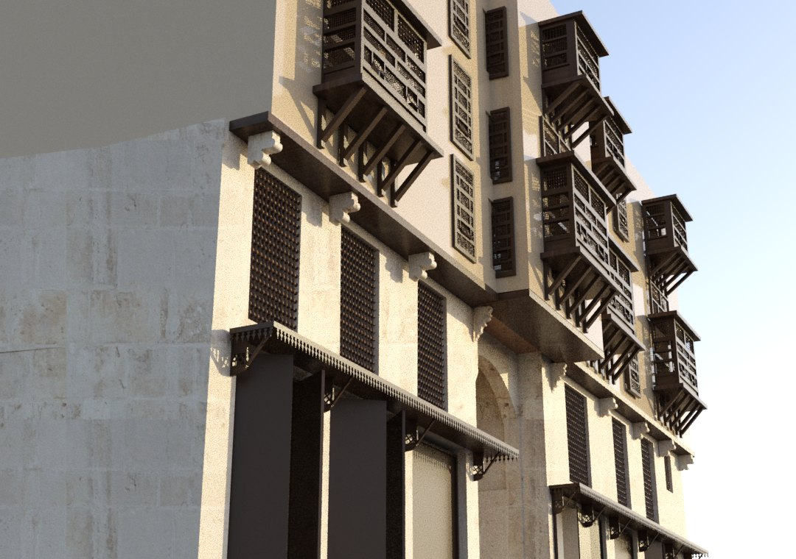
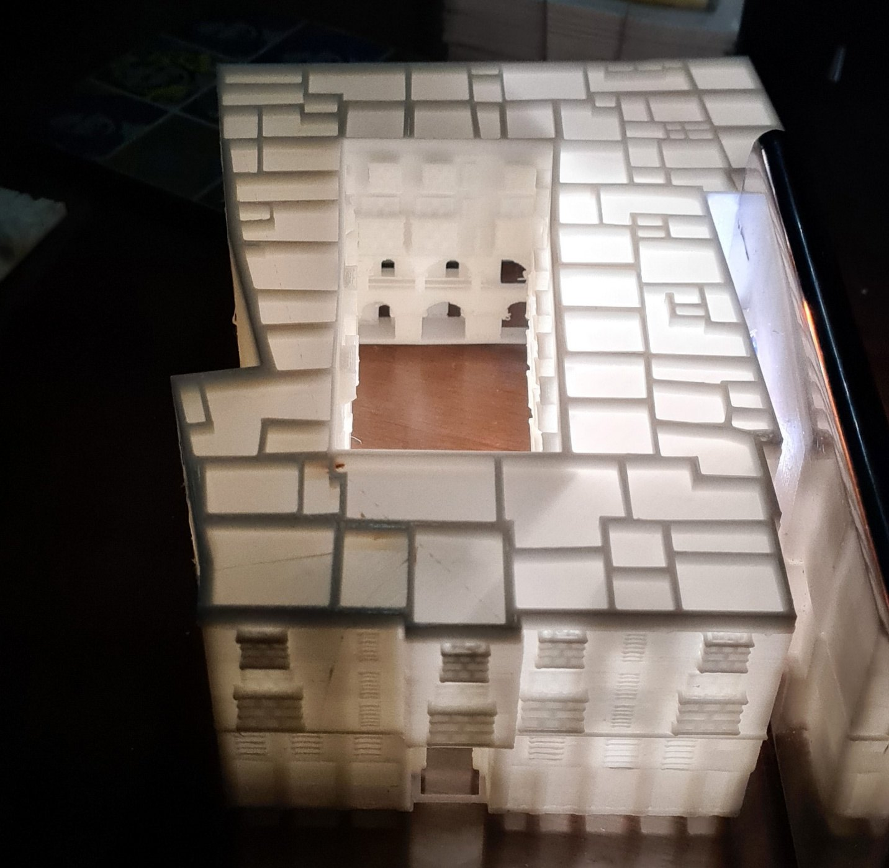
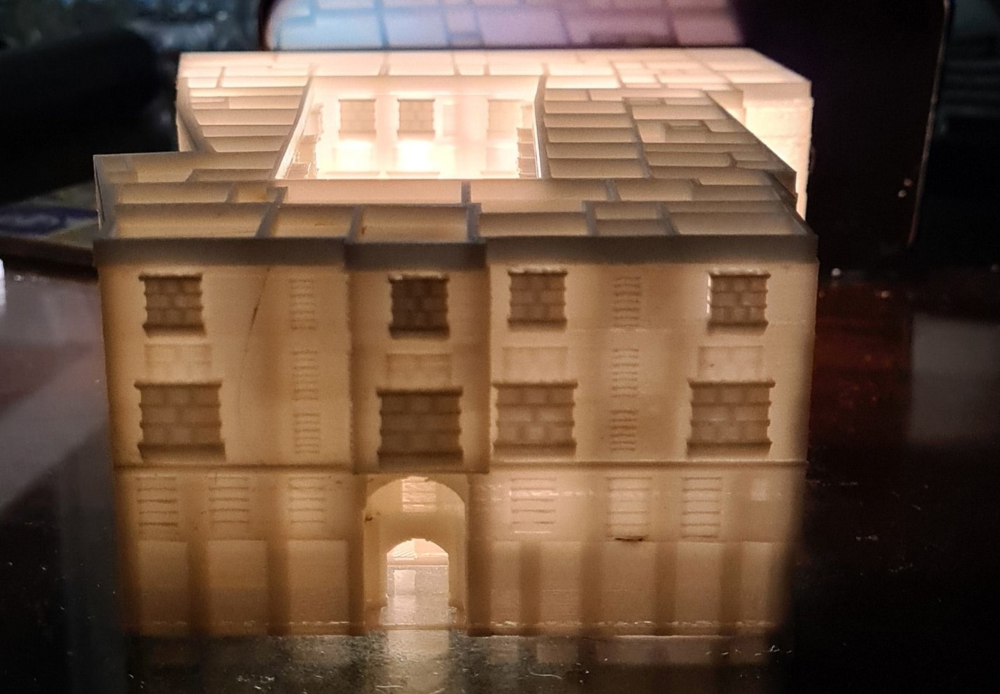
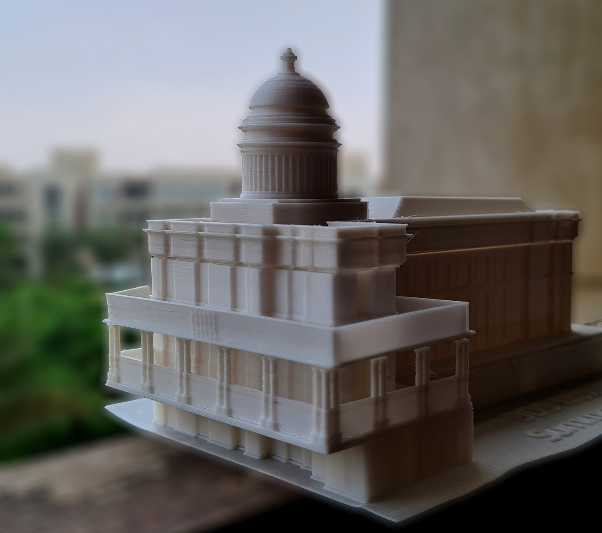
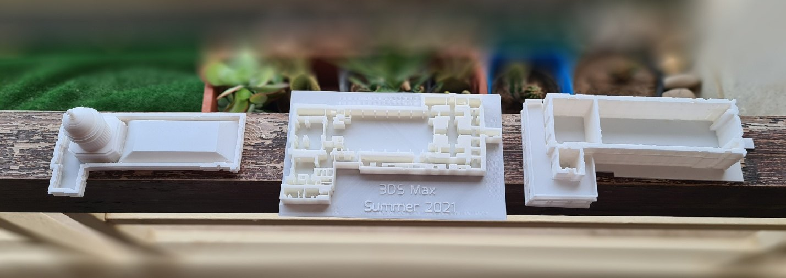
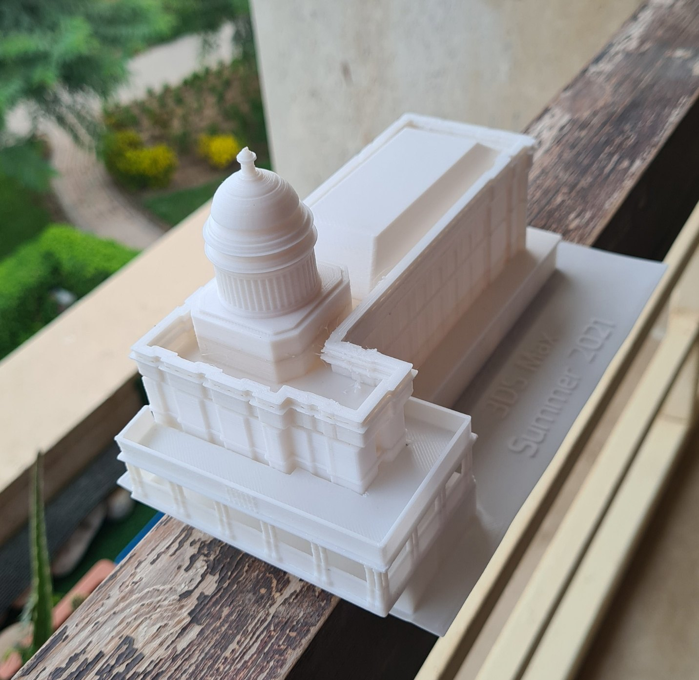
/ WITH THANKS
The students.
With thanks to the students whose work is shown here across five terms of the module: Haneen Tarek, Nada Mohamed, Salma Nabil, Saleh Mohamed, Mohamed Essam, Nourhan Mohamed and Mario Gerges.